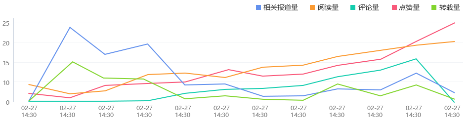
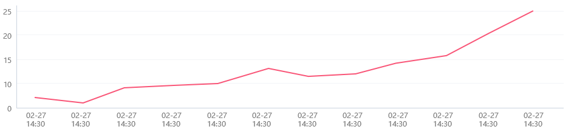
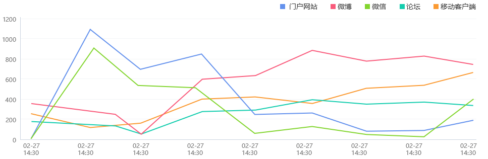
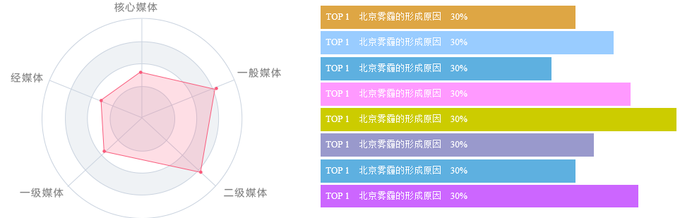

菲律宾火山及地震研究所报告
国际
菲律宾官方媒体5日晚间引述菲国家减灾管理委员会主任里卡多·加拉德的声明称，5日上午8时左右，菲国南部北苏里高省省会苏里高市发生5.9级地震。据菲律宾火山及地震研究所报告，这次地震是今年2月10日晚间在苏里高市发生的6.7级地震的余震。
地震、菲律宾、研究
全部
2017-03-23
李四
综合版
据菲律宾火山及地震研究所报告，这次地震是今年2月10日晚间在苏里高市发生的6.7级地震的余震。
图文
3000
菲律宾官方媒体5日晚间引述菲国家减灾管理委员会主任里卡多·加拉德的声明称，5日上午8时左右，菲国南部北苏里高省省会苏里高市发生5.9级地震。据菲律宾火山及地震研究所报告，这次地震是今年2月10日晚间在苏里高市发生的6.7级地震的余震。
内容简介
菲律宾官方媒体5日晚间引述菲国家减灾管理委员会主任里卡多·加拉德的声明称，5日上午8时左右，菲国南部北苏里高省省会苏里高市发生5.9级地震。菲律宾官方媒体5日晚间引述菲国家减灾管理委员会主任里卡多·加拉德的声明称，5日上午8时左右，菲国南部北苏里高省省会苏里高市发生5.9级地震。菲律宾官方媒体5日晚间引述菲国家减灾管理委员会主任里卡多·加拉德的声明称，5日上午8时左右，菲国南部北苏里高省省会苏里高市发生5.9级地震。
内容热度概况简介
相关报道量
123
阅读量
123
评论量
123
点赞量
123
转载量
123

热度趋势图

报道渠道

媒体分布

报道角度

观点分析

字数分析
| 相关报道量 | 总字数 | 平均字数 |
|---|---|---|
| 34232 | 34232 | 1256 |
-
报道形式

栏目分析